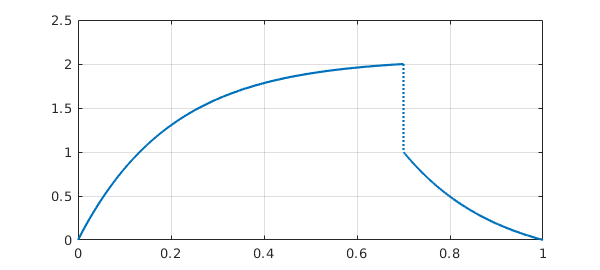
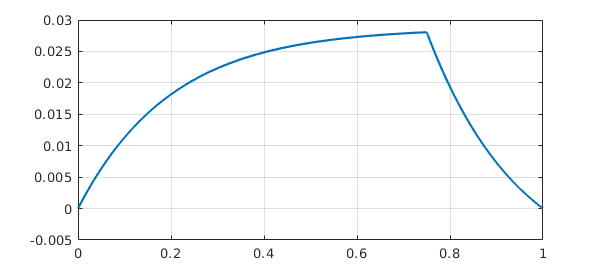
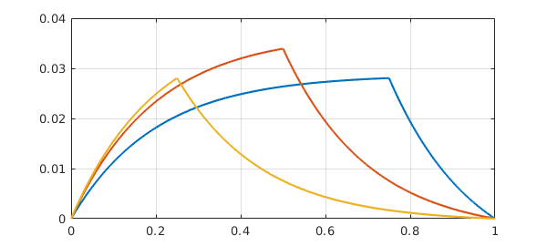

Chebfun allows you to specify jump conditions in ODE BVPs. For example, a 2nd-order ODE would normally take two boundary conditions, like this advection-diffusion equation:
eta = 0.2; L = chebop(@(x,u) eta*diff(u,2) + diff(u), [0 1]); L.lbc = 0; L.rbc = 0;
But suppose we want a continuous solution whose derivative jumps by $-1/\eta$ at $x=1/2$? Mathematically, this is like having one 2nd-order BVP on $[0,1/2]$ coupled to another on $[1/2,1]$, and we will need four boundary conditions in total. The two additional boundary conditions will assert that at $x=1/2$, the derivative jumps by $-1/\eta$ whereas the function value is continuous. Chebfun allows you to specify these conditions like this:
L.bc = @(x,u) [jump(u,1/2) ; jump(diff(u),1/2)+eta]; plot(L\0), grid on
Incidentally, jump is an abbreviation based on a more general Chebfun capability involving evaluations on the left and the right of a point. For example, we could do this:
L.bc = @(x,u) [feval(u,.7,'left')-2 ; feval(u,.7,'right')-1]; plot(L\0), grid on

Returning to the convenience of jump, suppose we want a jump in the function value and continuity of the derivative. We could do this:
L.bc = @(x,u) [jump(u,.2)-1; jump(diff(u),.2)]; plot(L\0), grid on
Now a Green's function for a linear ODE is a solution to a homogeneous BVP with a derivative jump condition at a point $s$ in the interior. The configuration at the beginning of this example was of exactly this kind. Here is the same calculation but for $s=0.75$.
L.bc = @(x,u) [jump(u,0.75) ; jump(diff(u),0.75)+eta]; plot(L\0), grid on

Let's superimpose results for $s=0.5$ and $s=0.25$:
hold on for s = .5:-.25:.25 L.bc = @(x,u) [jump(u,s) ; jump(diff(u),s)+eta]; plot(L\0) end hold off

Actually, we can combine Matlab's anonymous functions and Chebfun's ODE capabilities to make a single object that constructs this Green function:
green = @(s) chebop(@(x,u) eta*diff(u,2) + diff(u), [0 1], ...
@(x,u) [u(0); u(1); jump(u,s); jump(diff(u),s)+eta])\0;
Here is an illustration for $s = 0.1, 0.2, \dots, 0.9$.
for s = .1:.1:.9 plot(green(s)), hold on end grid on, hold off